Jürgen Bayer

Cascading Style Sheets
Inhalt
1 Einführung 1.1 Grundlagen 1.2 CSS1 und CSS2 2 Das Basiskonzept 2.1 Blockelemente, Inline-Elemente, Parent-Elemente und Child-Elemente 2.2 Stilvorlagen 2.2.1 Kaskadierender Aufbau von Stilen 2.2.2 Vererbung 2.2.3 Steuern der Vererbung in CSS2 3 Kommentare und Literale 3.1 Kommentare 3.2 Maßeinheiten 3.3 Farben 3.4 Zeitangaben 3.5 Winkel 3.6 Frequenzen 3.7 Zeichenketten 3.8 URLs 4 Selektoren 4.1 CSS1-Selektoren 4.1.1 Tagnamen 4.1.2 Stil-Klassen 4.1.3 Stilvorlagen für Elemente mit bestimmten IDs 4.1.4 Kombination von Tagnamen, Klassen und Ids 4.1.5 Kontextabhängige Selektoren 4.2 Erweiterte CSS2-Selektoren 4.2.1 Der universelle Selektor 4.2.2 Attribut-bedingte Selektoren 4.2.3 Child-Selektoren 4.2.4 Selektoren für angrenzende Geschwister 4.3 Pseudoklassen 5 Stilvorlagen inline, im Dokument und in separaten Dateien 5.1 Inline-Deklarationen 5.2 Eingebettete Stile 5.3 Eingebundene Stile 5.4 Stile importieren 6 Die wichtigsten CSS-Stile 6.1 Ein Tipp zuvor 6.2 Stile für die Schriftart 6.3 Eigenschaften für die Textauszeichnung 6.4 Farb- und Hintergrundeigenschaften 6.5 Eigenschaften zur Definition von Rahmen 6.6 Eigenschaften zur Beeinflussung des Element-Blocks 6.7 Stile für die Position und die Größe 7 Positionieren 7.1 Relatives und absolutes Positionieren 7.2 Den Fluss der Elemente steuern 8 Klassifizierungs-Eigenschaften 9 Medien 9.1 Unterschiedliche Formatierung für verschiedene Ausgabemedien 9.2 Import für bestimmte Medien 10 Praxistipps 10.1 Layer für den Netscape 4, den Netscape 6 und den Internet Explorer1 Einführung
Cascading Style Sheets (CSS), die mittlerweile zum HTML-Standard gehören, sind ein wichtiges Hilfsmittel bei der Gestaltung von HTML-Dokumenten. Erst Cascading Style Sheets ermöglichen eine optisch ansprechende und interessante Gestaltung von HTML-Dokumenten. Die Formatier- und Positionierungsfähigkeiten von CSS werden auch häufig gemeinsam mit DHTML genutzt, um Dokumente dynamisch zu verändern.
Ich erläutere in diesem Artikel die grundlegende Arbeit mit CSS1 (der älteren Version) und CSS2 (der neuen Version). Ich kann aber nicht alle CSS2-Features beschreiben, was größtenteils daran liegt, dass viele dieser Features von den aktuellen Browsern noch nicht oder nur unzureichend unterstützt werden. Sie finden hier aber eine schon sehr ausführliche Beschreibung der Features. Werfen Sie einen Blick in die CSS2-Spezifikation, die Sie im Internet an der Adresse www.w3.org/tr/rec-css2 finden und die die CSS2-Features sehr gut beschreibt (auf zurzeit 338 Seiten).
Um eine Übersicht zu erhalten, welche eventuell interessanten Features ich in diesem Artikel nicht beschreibe, liste ich diese kurz auf:
- Steuerungsfeatures für die Ausgabe auf Medien, die Daten seitenweise ausgeben: Über diese speziellen Features können Sie den Ausdruck eines Dokuments steuern. Sie können Druckränder definieren und Seitenumbrüche in das Dokument integrieren. Leider unterstützen die aktuellen Browser diese Features noch nicht. Lediglich die Eigenschaften zum Seitenumbruch (page-break-before, page-break-after) werden vom Internet Explorer ab Version 4 unterstützt.
- Die Eigenschaft font-stretch zur Einstellung der Schriftweite. Wird von den aktuellen Browsern nicht unterstützt.
- Features zur Formatierung von Tabellen.
- Features zur Sprachausgabe.
1.1 Grundlagen
Der Begriff »Cascading Style Sheets« bezeichnet Stilvorlagen (Style Sheets) für HTML-Elemente. Mit CSS können Sie HTML-Elemente umfangreich formatieren und positionieren. So können Sie beispielsweise das h1-Tag so umformatieren, dass damit deklarierte Überschriften immer in Arial, Schriftgröße 16, in blau, zentriert, mit einem Rahmen und mit rotem Hintergrund erscheinen. Der CSS-Standard, der in den Dokumenten www.w3.org/tr/rec-css1 und www.w3.org/tr/rec-css2 veröffentlicht ist, definiert dazu eine Sprache, mit der Sie für einzelne HTML-Elemente oder für alle HTML-Elemente eines Typs, einer speziellen CSS-Klasse oder mit einer spezifischen Id einzelne Stile definieren können. Dazu gehören z. B. die Hintergrundfarbe, ein Hintergrundbild, die Rahmenart, die Schriftart, die Position, die äußeren Ränder, die innere Einrückung und die Sichtbarkeit von HTML-Elementen. Aber CSS bietet noch mehr, wie die Steuerung des Ausdrucks eines Dokuments über Stile für das Seitenlayout und die Textflusskontrolle, die unterschiedliche Formatierung für verschiedene Ausgabemedien und die Steuerung der Sprachausgabe von Webseiten.
Ein spezielles CSS-Feature ist, dass Stile in separaten Dateien definiert werden können, die in beliebige Dokumente verlinkt werden. Damit können Sie das Layout einer ganzen Website zentral in einer oder mehreren CSS-Dateien verwalten und später bei Bedarf sehr einfach ändern. Eine andere Möglichkeit ist, Stilvorlagen über das style-Tag im Kopf eines Dokuments zu deklarieren. Die dritte Möglichkeit definiert Stile direkt im HTML-Starttag im style-Attribut. Die untergeordneten Stilvorlagen bauen dabei auf den übergeordneten auf und können bereits definierte Stilvorlagen erweitern oder auch umdefinieren. Das ist dann übrigens das kaskadierende in den Cascading Style Sheets.
Eine in ein Dokument eingebettete Stilvorlage für das p-Tag, die diesen mit einer definierten Schrift (Times, 14 Punkte, fett), einem Rahmen, einer Hintergrundfarbe und einem inneren Rand von fünf Pixel ausstattet, sieht beispielsweise so aus:
<html>
<head>
<meta http-equiv="Content-Type" content="text/html;
charset=iso-8859-1">
<style>
p
{
font: bold 14pt Times;
border: thin solid black;
background-color: silver;
padding: 5 5;
}
</style>
Wird das p-Tag im Dokument verwendet, werden diese Absätze immer mit den angegebenen Stilen formatiert ausgegeben:
<title>Einfache CSS-Demo</title>
</head>
<body>
<p>Das ist ein Absatz<br>
mit Stil
</p>
</body>
</html>
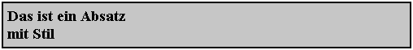
Mit CSS können Sie HTML-Dokumente zunächst einmal wesentlich umfangreicher formatieren als mit HTML alleine. Gut gestaltete Websites kommen deshalb heutzutage ohne CSS gar nicht mehr aus. Features wie die dynamische Positionierung und das Verbergen und Wieder-Anzeigen von Elementen ermöglichen zudem (in Verbindung mit DHTML) die Erzeugung benutzerfreundlicher und ansprechender Websites mit Menüs und anderen dynamischen Elementen.
1.2 CSS1 und CSS2
CSS1 ist in HTML 4 standardisiert, modernere Browser sollten also mit den enthaltenen Stilen einigermaßen zurechtkommen. Der neue Standard CSS2 wird von den aktuellen Browsern nur sehr mäßig unterstützt. Besonders der Netscape 4 kennt nur wenige CSS2-Stile und stellt viele der ihm bekannten Stile fehlerhaft dar. Sie sollten also immer überprüfen, ob Ihre Dokumente auch in den gängigen Browsern so dargestellt werden, wie Sie das erreichen wollten. Dazu gehören natürlich der Internet Explorer 5 und 6, der Netscape 4 (der immer noch von vielen Benutzern eingesetzt wird, weil die neue Version 6 wenig Zuspruch findet), die neue Netscape-Version 6 (inklusive der Mozilla-Variante) und eventuell der Opera-Browser. Problematisch ist leider, dass der Internet Explorer nicht gleichzeitig in mehreren Versionen installiert werden kann (beim Netscape geht das schon).
Ich weise bei der Beschreibung der einzelnen Features darauf hin, wenn das Feature von einem Browsertyp nicht oder fehlerhaft interpretiert wird.
CSS1 bietet die folgenden Features:
- die Deklaration von Stilvorlagen innerhalb von HTML-Tags,
- die Deklaration von Stilvorlagen für bestimmte HTML-Elemente (beispielsweise die einem bestimmten Tag oder einer bestimmten Klasse angehören) innerhalb eines HTML-Dokuments,
- die Deklaration von Stilvorlagen in separaten css-Dateien, die in beliebige Dokumente verlinkt werden können,
- eine Vererbung von Stilen übergeordneter HTML-Elemente an untergeordnete (was allerdings eigentlich ein altes HTML-Feature ist),
- einen kaskadierenden Aufbau von Stilvorlagen, bei dem untergeordnet (z. B. in HTML-Dokumenten) deklarierte Vorlagen die Deklarationen von übergeordneten (z. B. aus css-Dateien) erben und überschreiben können,
- Stileigenschaften für die Schriftauszeichnung, die Textformatierung, für Rahmen und Ränder, für Vorder- und Hintergrundfarben, für eine flexible Positionierung und Größeneinstellung und die Steuerung der Ausgabeart von Elementen (beispielsweise als Blockelement oder ohne HTML-konformen Zeilenumbruch).
CSS2 erweitert CSS1 um:
- die Möglichkeit, verschiedene Ausgabemedien zu berücksichtigen,
- die Möglichkeit, die Vererbung von Stilen von übergeordneten HTML-Elementen zu steuern,
- die Möglichkeit, den Ausdruck von Dokumenten zu steuern,
- Features für die Verwendung von Dokumenten durch sehgestörte Menschen,
- zusätzliche Stile für die Internationalisierung von Dokumenten,
- eine spezielle Art der Positionierung, bei der das Element beim Scrollen nicht mitgescrollt wird,
- die Möglichkeit, das Verhalten eines Elements zu steuern, wenn der Inhalt größer ist, als der sichtbare Bereich des Elements zulässt (z. B. Rollbalken einblenden oder das Element automatisch vergrößern),
- die Möglichkeit, minimale und maximale Breiten und Höhen zu definieren,
- erweiterte Selektoren wie solche, die einen Stil nur anwenden, wenn das Element ein Child eines bestimmten anderen Elements ist,
- die Möglichkeit, bestimmte Textelemente automatisch vor oder hinter HTML-Elemente zu platzieren und beispielsweise eine Nummerierung zu erreichen,
- Schatteneffekte für Text,
- die Möglichkeit, Systemfarben wie beispielsweise ButtonFace (Schaltflächenoberseite) und System-Schriftarten wie beispielsweise caption (Schriftart für Beschriftungen von Schaltern, Titelleisten etc.) zu verwenden,
- die Möglichkeit, den Mauscursor zu beeinflussen,
- und um erweiterte Stile für Rahmen für eine 3D-Darstellung von Elementen.
Natürlich hat Microsoft (und wahrscheinlich auch Netscape) den Standard wieder einmal durch eigene Stile erweitert. Diese speziellen Filterstile beschreibe ich hier nicht. Sie finden in den Beispielen zu diesem Artikel aber eine HTML-Datei, die diese Stile demonstriert.
2 Das Basiskonzept
2.1 Blockelemente, Inline-Elemente, Parent-Elemente und Child-Elemente
Auf den folgenden Seiten verwende ich immer wieder die Begriffe »Blockelement«, »Inline-Element«, »Parent-Element« und »Child-Element«. Ich erläutere diese Begriffe hier kurz, damit Sie wissen, worum es sich dabei handelt.
Ein Inline-Element ist ein HTML-Element, das mitten in den umgebenden Elementen des Dokuments platziert wird und das keinen Zeilenumbruch erzeugt. Die Tags b, i, center und div erzeugen beispielsweise solche Elemente.
Ein Parent-Element ist ein Element, das andere Elemente enthält. Die inneren Elemente sind dann die Childs des Parent-Elements. Wenn ein div-Element beispielsweise ein span-Element enthält,
<div>Ich bin das Parent-Element.
<span>Und ich bin das Child-Element</span>
</div>
so ist das span-Element das Child des div-Elements.
2.2 Stilvorlagen
Mit CSS definieren Sie normalerweise Stilvorlagen (Style Sheets) für spezifische HTML-Tags, für Tags, die einer selbst definierten Klassen angehören, für HTML-Elemente mit einer spezifischen Id etc. (die andere Möglichkeit sind Inline-Stile, die direkt in HTML-Tags über das style-Attribut definiert werden). Eine einfache Stilvorlage definiert beispielsweise die Vordergrundfarbe und die Hintergrundfarbe der h1- und h2-Tags:
<head>
<style type="text/css">
<!--
h1
{
color: red;
background-color:blue;
}
h2
{
color: blue;
background-color:green;
}
-->
</style>
...
Die Stilvorlage in diesem Beispiel wird im head-Bereich des Dokuments untergebracht. Das style-Tag leitet die Vorlage ein. Die Angabe des MIME-Typs der Vorlage (text/css) ist zwar für Browser nicht unbedingt notwendig, da es aber neben CSS auch weitere Sprachen wie beispielsweise JavaScript gibt (text/javascript), sollten Sie den Typ besser in Ihren Stilvorlagen angeben. Der HTML-Kommentar im style-Tag verhindert, dass Browser, die CSS nicht kennen, den Quelltext im Dokument ausgeben.
Eine Stilvorlage besteht aus einer oder mehreren Regelsätzen (Rule Sets). Eine Regel besteht aus einem Selektor (z. B. h1) und einem Satz aus Deklarationen (z. B. color: red; background-color:blue), der in geschweifte Klammern eingefügt ist. Die einzelnen Deklarationen werden durch Semikola voneinander getrennt. Die letzte Deklaration eines Regelsatzes muss nicht mit einem Semikolon abgeschlossen werden (kann aber, wenn Sie das wollen). Die Syntax einer Stilvorlage hat große Ähnlichkeit mit C++, Java, C# und ähnlichen Sprachen.
Ein Selektor kann der Name eines HTML-Tags sein, der Name einer eigenen CSS-Klasse, eine Id, eine Kombination aus Tagname und Klasse bzw. Id und (unter CSS2) noch einiges mehr, wie ich ab Seite 12 noch ausführlicher erläutere.
Eine Deklaration besteht aus einer Eigenschaft (z. B. color) und einem oder mehreren Werten. Wenn mehrere Deklarationen angegeben werden, werden diese über Semikola voneinander getrennt. Wenn eine Eigenschaft mehrere Werte zulässt, was beispielsweise bei font der Fall ist, werden diese durch Leerzeichen voneinander getrennt angegeben:
h1 {font: bold 14pt Times}
Sie können auch mehrere Selektoren angeben, die dann durch Kommata voneinander getrennt werden:
h1, h2, h3 {font: bold 14pt Times}
2.2.1 Kaskadierender Aufbau von Stilen
Eines der Basiskonzepte von CSS ist der kaskadierende Aufbau von Stilen (woher auch der Namen »Cascading Style Sheets« kommt). Wenn Sie beispielsweise in einem HTML-Dokument in einer Stilvorlage die Farben des h1-Tags umdefinieren,
<head>
<style type="text/css">
<!--
h1 {color: red; background-color:blue}
-->
</style>
</head>
erbt das h1-Tag die in der Stilvorlage definierten Eigenschaften. Die anderen Eigenschaften dieses Tag bleiben davon aber unberührt. Die Schriftart ist beispielsweise noch die, die der Browser für h1-Tags vorsieht.
Stilvorlagen können auch aufeinander aufbauen. So kann eine Inline-Stilvorlage (die direkt im HTML-Tag untergebracht wird) beispielsweise den Rahmen um ein h1-Element umdefinieren:
<body>
<h1 style="border:thin solid red">
Das ist eine Überschrift mit umdefiniertem Stil</h1>
...
In diesem Beispiel erbt das h1-Element die Eigenschaften der übergeordneten Stilvorlage, die Inline-Stilvorlage definiert weitere Eigenschaften.
Untergeordnete Stilvorlagen können geerbte Eigenschaften auch überschreiben:
<body>
<h1 style="color:green">
Das ist eine Überschrift mit nun grüner Farbe</h1>
...
Für diesen Fall gilt dann der in der untergeordneten Stilvorlage definierte Wert.
Es kann sogar sein, dass ein Stil innerhalb einer Stilvorlage mehrfach umdefiniert wird:
<head>
<style type="text/css">
<!--
h1 {color: red; background-color:blue}
...
h1 {color: green; border:thin solid black}
-->
</style>
</head>
...
2.2.2 Vererbung
<style type="text/css">
<!--
div
{
color: black;
background-color: #F0F0F0;
border:2px solid #A0A0A0;
padding:2px;
}
-->
</style>
und in ein div-Element ein anderes Element schachteln,
<div>Das ist ein div-Element, das ein <span>span-
Element</span> enthält.</div>
erbt das innere Element (das Child-Element) die Werte der Eigenschaften des äußeren (des Parent-Elements), die es selbst besitzt. Falls eine eventuelle Stilvorlage für das innere Element keine Eigenschaften überschreibt, sieht das innere genauso aus wie das äußere.

In diesem Beispiel erbt das span-Element die Werte der Eigenschaften color und background-color. Einige Eigenschaftswerte werden aber auch nicht vererbt. Das span-Element besitzt beispielsweise auch Eigenschaften für den Rahmen und den inneren Rand. Da es sich bei diesem Element aber um ein Inline-Element handelt, das fließend im Dokument ausgerichtet wird (ohne einen eigenen Absatz), verzichtet der Browser auf das Vererben von Eigenschaften, die zu einer verwirrenden Anzeige führen würden.
Werden Eigenschaften für das Child-Element überschrieben, beispielsweise die Farbe, ändert sich die Formatierung des inneren Elements natürlich:
<style type="text/css">
<!--
div
{
color: black;
background-color: #F0F0F0;
border:2px solid #A0A0A0;
padding:2px;
}
span
{
color:blue;
}
-->
</style>
...
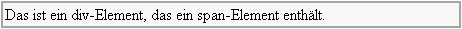
Viele HTML-Elemente definieren Eigenschaften aber auch im Browser. Das b-Tag definiert beispielsweise die Eigenschaft font-weight mit dem Wert bold. Diese Definitionen liegen in der Vererbungslinie ganz oben. Wenn eine Stilvorlage beispielsweise die font-weight-Eigenschaft des b-Tag überschreibt, gilt die Einstellung der Stilvorlage.
2.2.3 Steuern der Vererbung in CSS2
In CSS2 können Sie die Vererbung über den Wert inherit steuern, den Sie in alle CSS-Eigenschaften schreiben können. Wenn Sie beispielsweise die Farbe von span-Elementen in einer Stilvorlage auf blau umdefiniert haben,
<style type="text/css">
<!--
span {color: blue}
-->
</style>
und ein span-Element ohne weitere Stildeklaration in einem div-Element einsetzen, das mit einer roten Farbe definiert ist,
<div style="color: red">
Das ist Text direkt im div-Element.
<span>Das ist ein span, der die vom div geerbte Farbe über seine eigene
Stilvorlage neu definiert.</span>
</div>
erbt das span-Element ja per Voreinstellung nicht die Farbe seines (div-)Parent-Elements. Sie können mit dem Wert inherit aber festlegen, dass der span die Farbe seines Parent-Elements explizit erbt, unabhängig davon, ob diese in einer Stildeklaration umdefiniert wurde:
<div style="color: red">
Das ist Text direkt im div-Element.
<span style="color:inherit">Das ist ein span, der festlegt, dass er die Farbe
von seinem Parent-Element explizit erben will.</span>
</div>
3 Kommentare und Literale
3.1 Kommentare
Kommentare innerhalb einer Stilvorlage werden wie in C++, C#, Java etc. üblich mit einem /* eingeleitet und mit */ beendet. Kommentare können mehrzeilig sein:
/* Das ist ein
Kommentar */
3.2 Maßeinheiten
| Einheit | Beschreibung |
|---|---|
| pt | Punkt. Ein Punkt entspricht 1/72 Inch. |
| pc | Pica. Ein Pica entspricht 12 Punkten. |
| in | Inch (oder auch Zoll). Ein Inch entspricht 2,54 cm. |
| mm | Millimeter |
| cm | Zentimeter |
| Einheit | Beschreibung |
|---|---|
| em | em bezieht sich auf die Höhe der Schriftart, die dem Element zugewiesen ist. style="width:7em" bedeutet z. B.: 7-mal so breit, wie ein Zeichen hoch ist. Ändert sich bei diesem Beispiel die Schriftgröße, ändert sich auch die Breite des Elements. |
| ex | ex verhält sich wie em, nur dass hier die Höhe des kleinen x als Basis verwendet wird. |
| px | Pixel (die Größe eines Pixel ist relativ zur verwendeten Auflösung und zum Ausgabegerät). |
| % | Prozent. Eine Prozentangabe verhält sich relativ zur Größe des übergeordneten Elements, in dem das Element eingebettet ist. |
3.3 Farben
Einen RGB-Wert können Sie als Hexadezimalwert angeben:
p {color: #ff0000}
Sie können auch Dezimalwerte verwenden. Dazu verwenden Sie die rgb-Funktion:
p {color: rgb(255,0,0)}
Mit derselben Funktion können Sie die Farbanteile auch in Prozent angeben:
p {color: rgb(50%,30%,0)}
Der Prozentwert bezieht sich auf den maximal möglichen Wert 255.
3.4 Zeitangaben
Wenn Sie einmal eine Zeit angeben müssen (z. B. für die Sprachausgabe), verwenden Sie dazu die Einheiten ms (Millisekunden) und s (Sekunden).
3.5 Winkel
Winkelangaben verwenden die Einheiten deg (Degrie), grad (Grad) und rad (Radian).
3.6 Frequenzen
Frequenzen werden in den Einheiten Hz und kHz angegeben.
3.7 Zeichenketten
In manchen CSS-Elementen müssen Sie Zeichenketten angeben. Dazu gehört beispielsweise das Pseudoelement before, das einen Text und dessen Format definiert, der immer vor ein HTML-Element geschrieben wird:
p.important:before {content: "Wichtig: "; color:red}
Zeichenketten (Strings) können Sie entweder in Anführungszeichen oder Apostrophe einschließen:
"Das ist ein String"
'Das ist auch ein String'
Enthält die Zeichenkette ein Anführungszeichen bzw. Apostroph, müssen Sie dessen Sonderbedeutung über das Escape-Zeichen \ aufheben:
"Das ist ein \"String\""
Über das Escapezeichen können Sie Strings auch in mehrere Zeilen umbrechen:
"Das ist ein \
umbrochener String"
Das Escapezeichen führt dazu, dass der Zeilenumbruch im String ignoriert wird. Dieses Zeichen wird auch verwendet, um die Sonderbedeutung spezieller CSS-Zeichen im String aufzuheben (wie es beim Anführungszeichen bereits der Fall ist). Außerdem können Sie darüber ein Zeichen über dessen ISO-10646-Code hexadezimal angeben. Das Ampersand (&), das auch ein CSS-Sonderzeichen ist, können Sie beispielsweise so angeben:
"Drag\000026Drop"
Wenn die Codeangabe weniger als sechs Ziffern belegt, muss ein Leerzeichen dahinter stehen:
"Drag\26 Drop"
Das Leerzeichen wird nicht mit in den Ergebnisstring übertragen.
3.8 URLs
Für manche Stildeklarationen müssen Sie URLs angeben. Dazu verwenden Sie die url-Funktion:
url(Dateiangabe)
url(URL)
Dateien können Sie wieder relativ oder absolut angeben. Beachten Sie, dass eine relative Angabe sich auf den Ordner bezieht, in dem die css-Datei gespeichert ist, falls die Stildeklaration in einer solchen untergebracht ist. Alternativ zu Dateiangaben können Sie natürlich auch normale URLs verwenden.
4 Selektoren
4.1 CSS1-Selektoren
4.1.1 Tagnamen
Für die Deklaration von Stilen für alle HTML-Elemente, die mit bestimmten Tags formatiert sind, geben Sie einfach den Tagnamen als Selektor an. Das folgende Beispiel definiert für die Tags h1, h2 und h3 eine graue Hintergrundfarbe, einen Rahmen und einen inneren Rand von 5 Pixeln:
<style type="text/css">
<!--
h1, h2, h3
{
background-color:#F0F0F0;
border:thin solid;
padding:5px;
}
-->
</style>
4.1.2 Stil-Klassen
Neben der Anpassung des Stils von Tags können Sie noch Klassen von Stilen definieren. Eine Stil-Klasse ist zunächst nicht mit einem Tag verbunden. Erst wenn Sie die Stil-Klasse im class-Attribut eines Tags angeben, weisen Sie dem entsprechenden HTML-Element den in dieser Klasse definierten Stil zu. Ein Selektor für eine Stil-Klasse wird in der Stilvorlage durch einen Punkt gekennzeichnet. Das folgende Beispiel erzeugt eine Stil-Klasse für Zitate und eine für Code:
<style type="text/css">
<!--
.cite {font: italic 12pt Times; color: blue;}
.code {font: 10pt Courier; color: green;}
-->
</style>
HTML-Elemente, die dieser Klasse angehören, besitzen dann den in der Stil-Klasse definierten Stil:
<p class="cite">
Das ist ein Absatz der Klasse 'cite'.
</p>
<span class="cite">
Das ist ein Span der Klasse 'cite'.
</span>
<p class="code">
Das ist ein Absatz der Klasse 'code'.
</p>
4.1.3 Stilvorlagen für Elemente mit bestimmten IDs
In CSS1 können Sie Stilvorlagen schließlich noch so definieren, dass diese nur auf Elemente angewandt werden, die eine bestimmte ID besitzen. Die ID geben Sie dazu mit einem Hash (#) an:
<style type="text/css">
<!--
#firstName {font: bold italic 12pt Times; color: blue}
#lastName {font: bold italic 12pt Times; color: green}
-->
</style>
Alle Elemente, die diese Ids besitzen, werden dann so formatiert, wie die Stilvorlage es vorsieht:
<div id="firstName">Vorname: </div>
<div id="lastName">Nachname: </div>
4.1.4 Kombination von Tagnamen, Klassen und Ids
Sie können Tagnamen, Klassen und Ids für Selektoren beliebig kombinieren. Wenn Sie beispielsweise einen Tagnamen mit einer Klasse kombinieren, wird die Stilvorlage nur für HTML-Elemente mit demselben Tag angewandt, die der angegebenen Klasse angehören:
<style type="text/css">
<!--
h1.special {font: bold 20pt Arial;
color:black; background-color: gray;
border:5px solid black}
-->
</style>
</head>
<body>
<h1 class="special">
Überschrift mit speziellem Stil der Klasse 'special'.
</h1>
<h1>
Normale Überschrift.
</h1>
...
Genauso können Sie Stile für Elemente definieren, die einer bestimmen Stilklasse angehören und die eine bestimmte Id besitzen oder die mit einem bestimmten Tag formatiert sind und eine bestimmte Id besitzen oder die alle drei Bedingungen erfüllen. Beachten Sie dabei, dass Sie die logische Reihenfolge der Selektorteile einhalten: Tagname.Klassenname#Id. Das folgende Beispiel definiert eine Stilvorlage für p-Elemente der Klasse info, die die Id warning besitzen:
p.info#warning {color: red; background-color:yellow}
Ein p-Element der Klasse info mit der Id warning wird nun so formatiert, wie es die Stilvorlage definiert:
<p class="info" id="warning">
Absatz der Klasse "info" mit der Id "warning"</p>
Sie müssen bei Kombinationen beachten, dass die HTML-Tags eventuell für den Tagnamen bzw. die Klasse zuvor definierte Stile erben. Wenn für das h1-Tag beispielsweise zuvor irgendwo die Farbe red definiert wurde, erbt die Deklaration für eine Kombination dieses Tags mit einer Klasse diese Farbe. Wird die Farbe in der Deklaration nicht überschrieben, werden HTML-Elemente mit dieser Tag/Klassenkombination in roter Farbe ausgegeben.
4.1.5 Kontextabhängige Selektoren
Die Eigenschaften äußerer Elemente werden, wie Sie ja bereits wissen, an innere Elemente vererbt. Wenn Sie die geerbten Eigenschaften von inneren Elementen in Stilvorlagen umdefinieren, verwendet der Browser die neuen Definitionen. Um nun diese Eigenschaften nicht global (für das gesamte Dokument gültig) überschreiben zu müssen, können Sie festlegen, dass eine Stilvorlage nur angewendet wird, wenn das Element in ein anderes Element geschachtelt ist. Dazu geben Sie das äußere Element zuerst an, gefolgt vom inneren Element und der Stildeklaration. Das folgende Beispiel deklariert eine Stilvorlage für span-Elemente der Klasse info, die Teil eines h1-Elements sind:
h1 span.info {color: blue}
Nur wenn ein span-Element der Klasse info innerhalb eines h1-Elements angelegt wird, wird diese Stildeklaration angewendet. Sie können auch mehrere Verschachtelungsebenen angeben:
ul ul li {font-size: smaller}
In diesem Beispiel wird die Stilvorlage nur angewendet, wenn ein li-Element Child eines ul-Elements ist, das wiederum selbst in einem ul-Element angelegt ist. So können Sie beispielsweise bei verschachtelten Listen erreichen, dass die inneren Listeneinträge kleiner ausgegeben werden als die äußeren:
<ul>
<li>Eintrag in der äußeren Liste</li>
<ul>
<li>Eintrag in der inneren Liste</li>
<li>Eintrag in der inneren Liste</li>
</ul>
<li>Eintrag in der äußeren Liste</li>
</ul>
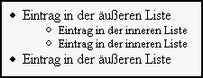
4.2 Erweiterte CSS2-Selektoren
CSS2 kennt natürlich alle Selektoren von CSS1, erweitert diese aber noch um zusätzliche Varianten.
4.2.1 Der universelle Selektor
CSS2 kennt den Selektor *, mit dem beliebige Elemente angesprochen werden können. Dieser Selektor wird hauptsächlich gemeinsam mit Attribut-bedingten Selektoren verwendet.
4.2.2 Attribut-bedingte Selektoren
In CSS2 können Sie Selektoren verwenden, die eine Stilvorlage nur dann anwenden, wenn das angesprochene Elemente bestimmte Attribute definiert oder in diesen bestimmte Werte speichert. Dazu geben Sie das Attribut in eckigen Klammern hinter dem eigentlichen Selektor an. Sie können einzelne Attributnamen angeben oder auch die Werte spezifizieren.
| Selektor | Bedeutung |
|---|---|
| Element[Attribut] | wendet die Stilvorlage an, wenn das Element das angegebene Attribut mit einem beliebigen Wert belegt. |
| Element[Attribut=Wert] | wendet die Stilvorlage an, wenn das Element das angegebene Attribut mit einem bestimmten Wert belegt. |
| Element[Attribut~=Wert] | wendet die Stilvorlage an, wenn das Element mehrere durch Leerzeichen getrennte Werte in einem Attribut erlaubt und einer davon dem angegebenen Wert entspricht. |
| Element[Attribut|=Wert] | wendet die Stilvorlage an, wenn das Element mehrere durch einen Bindestrich getrennte Werte speichert, die mit dem angegebenen Wert beginnen. |
Sie können mehrere Attributspezifikationen hintereinander angeben. Die folgenden Beispiele sollen den Umgang mit diesen speziellen Selektoren verdeutlichen:
h1[title] {color: blue}
wird angewendet, wenn ein h1-Element das Attribut title mit irgendeinem Wert belegt.
h1[title="contents"] {color: green}
wird angewendet, wenn ein h1-Element das Attribut title mit "contents" belegt.
span[class="special"][name] {color: blue}
wird angewendet, wenn ein span-Element das Attribut class mit "special" belegt und in das Attribut name irgendeinen Wert schreibt.
a[rel~="Internetprogrammierung"] {color: blue}
wird angewendet, wenn im Attribut rel eines a-Tag der Wert "Internetprogrammierung" vorkommt, beispielsweise bei der folgenden Deklaration:
<a href="http://www.addison-wesley.de"
rel="Programmierung Internetprogrammierung
Betriebssysteme">Addison Wesley</a>
*[lang="de"] {display: none}
wird für ein beliebiges Tag angewendet, wenn dieser im Attribut lang den Wert "de" speichert. Das Beispiel versteckt diese Elemente.
*[lang|="de"] {display: none}
wird für ein beliebiges Tag angewendet, wenn dieser im Attribut lang einen Wert speichert, der mit "de" beginnt und eventuell mit einem Bindestrich getrennt weitere Werte speichert, beispielsweise "de-de" oder "de-ch".
4.2.3 Child-Selektoren
Child-Selektoren definieren Stilvorlagen für Elemente, die Child eines anderen Elements sind. Ein Child-Element ist einem Parent-Element direkt untergeordnet. Bei den kontextabhängigen CSS1-Selektoren darf das innere Element auch Teil eines anderen, in das äußere Element geschachtelten Tags sein. Bei Child-Selektoren ist festgelegt, dass das innere Element ein direkter Child des äußeren Elements ist.
Die Deklaration ähnelt der von kontextabhängigen Selektoren, nur dass Sie hier ein > zwischen die einzelnen Selektorangaben schreiben:
h1 > span {background-color: silver}
Auf das folgende Element wird diese Deklaration angewendet:
<h1>Überschrift mit <span>span</span> als Child</h1>
Ist das span-Tag aber nur indirekt Child eines h1-Tag, wird die Stilvorlage nicht angewendet:
<h1>Überschrift mit <b><span>span</span><b> b-Tag als Child, der wieder einen Span als Child besitzt</h1>
4.2.4 Selektoren für angrenzende Geschwister
Für Elemente, die direkt neben einem anderen bestimmten Element in demselben Parent-Element angeordnet sind, können Sie in CSS2 ebenfalls Stilvorlagen definieren. Dazu geben Sie die Elemente getrennt durch ein Plus-Zeichen an:
div + p {text-indent: 0}
Dieses Beispiel definiert eine Stilvorlage für ein p-Element, das direkt einem div-Element folgt. Das folgende Beispiel soll etwas Licht ins Dunkel bringen. Die Stildeklarationen definieren die Einrückung des p-Tag um und geben dann an, dass ein p-Tag, der einem div-Tag folgt, nicht eingerückt werden soll:
<style type="text/css>
<!--
p {text-indent:20px}
div + p {text-indent:0px}
-->
</style>
Ein normales p-Element wird eingerückt dargestellt:
<p>Das ist ein normaler Absatz</p>
Wenn das p-Element allerdings einem div folgt, wird nicht eingerückt:
<div>Das ist ein div.</div>
<p>Das ist ein Absatz neben einem div.</p>
4.3 Pseudoklassen
Pseudoklassen werden mit einem Doppelpunkt getrennt an den Selektor angehängt. Das folgende Beispiel definiert die Farben der drei Verweisarten um:
a:link {color: red}
a:visited {color: blue}
a:active {color: lime}
Diese speziellen Pseudoklassen für Verweise können nur auf das a-Tag angewendet werden. Andere, wie beispielsweise die für die erste Zeile eines Absatzes, können mit allen Tags eingesetzt werden. Das folgende Beispiel definiert die erste Zeile eines div der Klasse special so um, dass diese in Großbuchstaben ausgegeben wird:
div.special:first-line {text-transform:uppercase}
Tabelle 4.2 listet die Pseudoklassen von CSS1 und CSS2 auf.
| Pseudoklasse | Bedeutung |
|---|---|
| a:link | bezieht sich auf unbesuchte Verweise. |
| a:visited | bezieht sich auf bereits besuchte Verweise. |
| a:active | bezieht sich auf aktive Verweise (die gerade den Eingabefokus besitzen). |
| first-line | bezieht sich auf die erste Zeile eines Elements. Wird vom Netscape 6 und vom Internet Explorer ab Version 5.5 unterstützt. |
| first-letter | bezieht sich auf das ersten Zeichen des Textes eines Elements. Wird vom Netscape 6 und vom Internet Explorer ab Version 5.5 unterstützt. |
| first-child (CSS2) | bezieht sich auf das erste Childelement eines Elements. Wird nur vom Netscape 6 unterstützt. |
| hover (CSS2) | bezieht sich auf den Zustand, wenn der Anwender die Maus auf das Element bewegt und dort einen kurzen Moment ruhen lässt. Über diese Pseudoklasse können Sie sehr einfach dynamische Effekte erzielen ohne zu programmieren. Der Netscape ab Version 6 und der Internet Explorer unterstützen hover nur unvollständig, beispielsweise für das a-Tag. |
| active (CSS2) | bezieht sich auf den Zustand, wenn der Anwender ein Element aktiviert, beispielsweise mit der Maus anklickt. |
| focus (CSS2) | bezieht sich auf den Zustand, wenn ein Element den Eingabefokus erhält. Wird nur vom Netscape 6 unterstützt. |
| lang (CSS2) | bezieht sich auf eine in Klammern angegebene Sprache. Wird von keinem Browser unterstützt. |
| before (CSS2) | Über diese Pseudoklasse können Sie einen Text definieren, der immer vor einem HTML-Element erscheint. Wird (leider) nur vom Netscape 6 unterstützt. |
| after (CSS2) | Über diese Pseudoklasse können Sie einen Text definieren, der hinter einem HTML-Element erscheint. Wird (leider) nur vom Netscape 6 unterstützt. |
Interessant sind die Pseudoklassen first-line und first-letter, über die Sie die erste Zeile bzw. das erste Zeichen des Textes in einem Element beeinflussen können. Das folgende Beispiel definiert eine Stilvorlage, die das erste Zeichen eines Absatzes der Klasse special 400% größer ausgibt als die übrigen und die die erste Zeile fett in Kapitälchen formatiert:
<style type="text/css">
<!--
body {background-color: #F0F0F0}
a:link {color: blue}
a:visited {color: green}
a:active {color: red}
a:hover {background-color:yellow}
p {font: arial 12pt}
p.special:first-letter {font-size:400%}
p.special:first-line {font-variant: small-caps; font-weight: bold}
-->
</style>
Ein Absatz der Klasse special wird nun entsprechend formatiert ausgegeben:
<p class="special">
Das ist ein Absatz,<br>
dessen erstes Zeichen größer und dessen erste Zeile<br>
in fetten Kapitälchen ausgegeben werden sollte,<br>
sofern der Browser diese Pseudoklassen unterstützt.
</p>
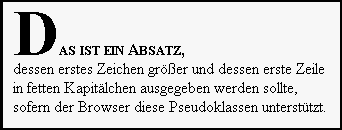
Die Pseudoklasse hover können Sie einsetzen, um einfache dynamische Effekte zu erzielen ohne programmieren zu müssen. So können Sie beispielsweise das a-Tag umdefinieren, dass dieser ein andere Hintergrundfarbe erhält, wenn der Anwender die Maus auf das a-Element bewegt:
<style type="text/css">
<!--
a:hover {background-color:yellow}
-->
</style>
So können Sie beispielsweise auch die Farbe eines Schalters bei einer Mausbewegung umsetzen:
<style type="text/css">
<!--
input[type="button"]:hover {background-color: red}
-->
</style>
Das Beispiel funktioniert aber nur im Netscape 6, weil der Internet Explorer erstens (leider) die Selektoren für Attribute nicht unterstützt und zweitens die hover-Pseudoklasse für ein input-Element ignoriert.
Sehr interessant sind auch die Pseudoklassen before und after, über die Sie einen beliebigen Text vor bzw. nach einem Element platzieren können:
<style type="text/css">
<!--
div.warning:before {content: "Warnung: ";
color: red; background-color: yellow}
div.warning:after {content: " Ende der Warnung.";
color: blue; background-color: yellow}
-->
</style>
Ein div-Element der Klasse warning erhält nun den angegebenen Text vor und hinter dem Inhalt des Elements:
<div class="warning">Passen Sie auf Ihr Board auf,
wenn Skifahrer hinter Ihnen am Lift anstehen.</div>
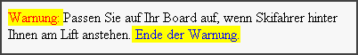
Für diese Pseudoklassen können Sie nicht nur einen Text spezifizieren, sondern auch spezielle Eigenschaften des Element-Präfix und Suffix, wie beispielsweise Zähler (Counter) und die Funktion attr(Attributname), die den Wert eines Attributs zurückgibt. Diese speziellen Dinge will ich hier aber nicht besprechen, weil die Pseudoklassen before und after zurzeit noch nicht allzu intensiv unterstützt werden. In der CSS2-Spezifikation finden Sie Näheres dazu.
5 Stilvorlagen inline, im Dokument und in separaten Dateien
5.1 Inline-Deklarationen
<h1 style="border: thin solid;
background-color:silver">
Das ist eine Überschrift mit Stil
</h1>
Wenn Sie in Inline-Deklarationen Stileigenschaften überschreiben, die das Element von übergeordneten Stilvorlagen geerbt hat, gelten die neuen Werte der Eigenschaften. Inline-Stile wirken auf der untersten Ebene und besitzen damit die höchste Priorität.
5.2 Eingebettete Stile
Das folgende Beispiel deklariert einer Stilvorlage für die Tags body, h1, h2, h3 und p:
<head>
...
<style type="text/css">
<!--
body {background-color:#F0F0F0}
h1 {font:bold 18pt Arial; color:blue;
background-color:silver; border:thin solid black;
padding:5px;}
h2 {font:bold 14pt Arial;color: blue;
background-color:silver; border:thin solid black;
padding:3px;}
h3 {font: bold 12pt Arial; color: blue;
background-color: silver; border: thin solid black;
padding:2px;}
p {font: 10pt Arial; color: blue}
-->
</style>
...
</head>
Die HTML-Kommentare im style-Tag sorgen dafür, dass Browser, die CSS nicht kennen, nicht die enthaltenen Stilbeschreibungen im Dokument anzeigen.
5.3 Eingebundene Stile
Statt Stile in jedem HTML-Dokument separat zu definieren, können Sie diese auch in einer separaten Datei verwalten und in die einzelnen Dokumente einer Website einbinden. In der CSS-Datei werden die Stile wie bei eingebetteten Stilen definiert, nur dass das style-Tag wegfällt:
@charset "iso-8859-1";
body {background-color:#F0F0F0}
h1 {font:bold 18pt Arial; color:blue;
background-color:silver; border:thin solid black;
padding:5px;}
h2 {font:bold 14pt Arial;color: blue;
background-color:silver; border:thin solid black;
padding:3px;}
h3 {font: bold 12pt Arial; color: blue;
background-color: silver; border: thin solid black;
padding:2px;}
p {font: 10pt Arial; color: blue}
Den zu verwendenden Zeichensatz geben Sie über die At-Regel @charset "iso-8859-1" an. Die Bedeutung des korrekt angegebenen Zeichensatzes ist dieselbe wie bei HTML. Beachten Sie, dass die At-Regel mit einem Semikolon abgeschlossen werden muss.
Im HTML-Dokument binden Sie die CSS-Datei nun über ein link-Tag ein:
<head>
...
<link rel="stylesheet" type="text/css" href="Stile.css">
...
</head>
Der Vorteil solcher eingebundenen Stildateien ist, dass eine Änderung der Stile in dieser Datei sich sofort auf alle Dokumente auswirkt, die die Stildatei einbinden. Damit können Sie den Stil einer ganzen Website sehr flexibel und einfach verwalten (abgesehen von den recht komplexen Stilangaben). Dieses Feature sollten Sie nicht unterschätzen (falls Sie das überhaupt machen). Wenn Sie die Stile möglichst aller HTML-Elemente in einer css-Datei verwalten und die HTML-Elemente zudem noch klassifizieren (über CSS-Klassen), geben Sie wahrscheinlich bei dem Wunsch Ihres Kunden, die Farben oder Schriftarten der Website zu ändern, ein gelangweiltes »Kein Problem, ist in fünf Minuten erledigt« zur Antwort. Ich habe mit der ersten, selbst gestalteten Website für einen Kunden bereits genug negative Erfahrung gesammelt, so dass ich jetzt immer konsequent css-Dateien einsetze.
5.4 Stile importieren
In eine Stilvorlage können Sie andere Stilvorlagen importieren. Die zu importierenden Stilvorlagen müssen dazu in einer Datei gespeichert sein. Diese Datei binden Sie über die At-Regel @import ein. Dazu geben Sie entweder den (relativen oder absoluten) Dateinamen als String an oder verwenden die url-Funktion zur Angabe einer URL:
@charset "iso-8859-1";
@import "basestyles.css";
body {margin:2cm}
h1 {border-style:solid}
h2 {border-style:solid}
h3 {border-style:solid}
Das Beispiel importiert die Stilvorlage der Datei basestyles.css, die im selben Verzeichnis erwartet wird.
6 Die wichtigsten CSS-Stile
Die Cascading Style Sheets definieren eine große Anzahl an Stilen. Viele davon können auf die meisten HTML-Tags angewendet werden, einige funktionieren (meistens naturgemäß) mit einigen Tags nicht. Die Beschreibung aller Stile und deren Verwendbarkeit mit den verschiedenen Tags würde den Rahmen dieses Buchs sprengen. Ich beschreibe deshalb hier nur die in meinen Augen wichtigsten Stile.
6.1 Ein Tipp zuvor
Wenn Sie mit Stilen arbeiten, sollten Sie immer überprüfen, ob Ihre Dokumente auch in allen gängigen Browsern funktionieren. Dazu gehören natürlich der Internet Explorer 5.x und 6.x, der Netscape 4.x (der immer noch von vielen Benutzern eingesetzt wird, weil die neuen Version 6.x wenig Zuspruch findet) und die neue Netscape-Version 6.x. Problematisch ist leider, dass der IE nicht gleichzeitig in mehreren Versionen installiert werden kann (beim Netscape-Browser geht das schon). Testen Sie einmal die Beispieldateien dieses Kapitels in den verschiedenen Versionen der Browser, und Sie sehen, was ich meine. Besonders die Seite Positions- und Größen-Stile.htm wird vom Netscape 4.7 sehr konfus dargestellt.
6.2 Stile für die Schriftart
Natürlich können Sie auch die Schriftart mit einigen Stilen beeinflussen. Sie können einzelne Stile verwenden oder den font-Stil, der alle Angaben gemeinsam erlaubt.
- font-family: definiert die Schriftart. Sie können mehrere allgemeine oder spezielle Schriftartenname angeben, die Sie mit Kommata trennen. Damit erreichen Sie, dass der Browser einfach die nächste Schriftart verwendet, falls eine Schriftart nicht auf dem System installiert oder nicht verfügbar ist. Schriftartennamen, die Leerzeichen enthalten, müssen in Anführungszeichen gesetzt werden. Zu den allgemeinen Schriftartennamen gehören serif, sans-serif, cursive, fantasy und monospace. Beispiel: font-familiy:"Century Schoolbook",Times.
- font-size: Dieser Stil legt die Schriftgröße in den üblichen Einheiten (pt, % etc.) oder in einer speziellen "ungenauen" Einheit fest. Eine prozentuale Angabe bezieht sich auf die normale Größe der Schrift. Eine Schrift, die 50 Prozent größer ist als die normale Schrift, definieren Sie z. B. so: font-size:150%. Für »ungenaue« Angaben verwenden Sie die Werte xx-small, x-small, small, medium, large, x-large, xx-large, smaller (sichtbar kleiner als normal) und larger (sichtbar größer als normal).
- font-weight: Mit diesem Stil definieren Sie, ob und wie fett die Schrift ausgegeben wird. Sie können die folgenden Werte verwenden: bold (fett), bolder (extra fett), lighter (dünner). Der Internet Explorer und der Netscape unterscheiden bold und bolder nicht. Alternativ können Sie das Schriftgewicht als Zahlwert zwischen 100 und 900 in Hunderterschritten angeben. 100 definiert ein extra dünnes Schriftgewicht, 900 ein extra fettes. Internet Explorer und Netscape unterscheiden allerdings nur die Werte 100 (normal) und 600 (fett).
- font-style: Definiert, ob die Schrift kursiv ausgegeben wird. Sie können die Werte italic (kursiv) und normal verwenden.
- font-variant: Definiert, ob die Schriftart mit Kapitälchen ausgegeben wird. Sie können die Werte small-caps (Kapitälchen) und normal verwenden.
- font: Mit dieser Eigenschaft können Sie die einzelnen Schrifteigenschaften zusammenfassen. Die Reihenfolge der Angaben ist festgelegt: style variant weight size height family. Einzelne Angaben können Sie allerdings auch einfach weglassen. Beispiel: font:bold italic 12pt Helvetica, Times.
Abbildung 6.1 zeigt die Schriftart-Eigenschaften im Internet Explorer.
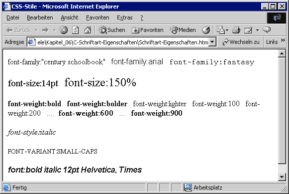
6.3 Eigenschaften für die Textauszeichnung
- word-spacing: Diese Eigenschaft bestimmt den Abstand zwischen einzelnen Worten. Wird nicht vom Internet Explorer (5.5) unterstützt!
- letter-spacing: bestimmt den Abstand zwischen den einzelnen Buchstaben der Wörter. Beispiel: Gesperrte Schrift mit einer Zeichenhöhe Abstand: letter-spacing:1em.
- text-decoration: legt die Dekoration eines Textes mit den folgenden Werten fest: underline (unterstrichen), overline (überstrichen), line-through (durchgestrichen). Der Wert blink ist im Standard vorgesehen, wird aber weder vom Internet Explorer noch vom Netscape unterstützt. Sie können mehrere Angaben kombinieren.
- vertical-align: Diese Eigenschaft bestimmt die vertikale Ausrichtung von Text in einem Element. Die Ausrichtung bezieht sich auf das übergeordnete Element. Die Werte, die Sie hier angeben können, sind vielfältig: baseline (Ausrichtung an der Basislinie des übergeordneten Elements), middle (mittige Ausrichtung), sub (tiefstellen), super (hochstellen), text-top (Ausrichtung am oberen Rand der Schrift im übergeordneten Element), text-bottom (Ausrichtung am unteren Rand der Schrift im übergeordneten Element), top (Ausrichtung oben am höchsten Element der Zeile) und bottom (Ausrichtung unten am niedrigsten Element der Zeile).
- text-transform: bestimmt die Transformation des Textes mit den folgenden Werten: capitalize (schreibt den ersten Buchstaben jedes Worts groß), uppercase (Großbuchstaben), lowercase (Kleinbuchstaben).
- text-align: bestimmt die horizontale Ausrichtung mit den Werten left, right, center oder justify (Blocksatz).
- text-indent: Diese Eigenschaft bestimmt die Einrückung der ersten Zeile eines Absatzes.
- line-height: bestimmt die Zeilenhöhe.
Abbildung 6.2 zeigt die einzelnen Text-Eigenschaften im Internet Explorer.
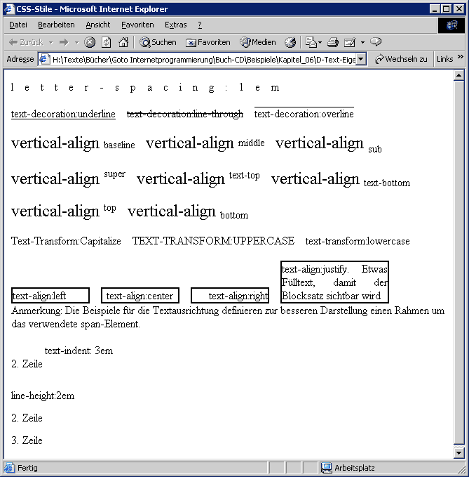
6.4 Farb- und Hintergrundeigenschaften
Mit den folgenden Stileigenschaften können Sie die Farbe und den Hintergrund eines HTML-Elements beeinflussen:
- color: Diese Eigenschaft bestimmt die Text- und die Rahmenfarbe als RGB-Wert oder über eine der vordefinierten Farbangaben (red, green etc.).
- background-color: Hintergrundfarbe als RGB-Wert oder eine der vordefinierten Farbangaben. Beispiel: background-color:#003366
- background-image: Angabe eines Hintergrundbilds als Dateiangabe oder in Form einer URL. Das Bild wird normalerweise so oft wiederholt, bis der Inhalt des HTML-Elements ausgefüllt ist. Mit dem Stil background-repeat können Sie dieses Verhalten jedoch auch beeinflussen. Beispiel: <body style="background-image:url(background.gif)">.
- background-repeat: Mit dieser Eigenschaft können Sie festlegen, ob und wie ein Hintergrundbild wiederholt ausgegeben wird. Verwenden Sie dazu die Werte repeat (horizontal und vertikal wiederholen), repeat-x (horizontal wiederholen), repeat-y (vertikal wiederholen) oder no-repeat (nicht wiederholen),
- background-attachment: Ein Hintergrundbild wird normalerweise mitgescrollt, wenn der Inhalt des HTML-Elements gescrollt wird. Mit dem Wert fixed können Sie erreichen, dass das Hintergrundbild stehen bleibt. Der andere mögliche Wert ist scroll (Voreinstellung).
- background-position: Wenn Sie ein Hintergrundbild nicht wiederholen lassen, können Sie das Bild mit diesem Stil an einer bestimmten Position innerhalb des Rahmens ausgeben lassen, der das HTML-Element umgibt. Dazu können Sie absolute und relative Angaben machen, die Sie durch Leerzeichen trennen. Eine Position von 20px 40px bedeutet: Die Mitte der Grafik befindet sich 20 Pixel vom linken Rand und 40 Pixel vom rechten Rand. 20% 40% bedeutet: Die Mitte der Grafik befindet sich 20% der Breite des Elements vom linken Rand und 40% der Höhe des Elements vom oberen Rand. Wenn Sie eine Grafik genau in der Mitte anlegen wollen, verwenden Sie eine Position von 50% 50%. Alternativ können Sie auch die Werte left, center und right verwenden, um die Position von links festzulegen und die Werte top, center und bottom für die Position von oben.
- background: Mit dieser Eigenschaft können Sie die Hintergrund-Stile zusammenfassen. Die Reihenfolge der Angaben ist color image repeat attachment und position und muss eingehalten werden. Einzelne Angaben können Sie allerdings auch einfach weglassen.
Abbildung 6.3 zeigt einige dieser Eigenschaften im Internet Explorer.
6.5 Eigenschaften zur Definition von Rahmen
CSS definiert die folgenden Stile für die Definition von Rahmen um ein HTML-Element:
- border-width: definiert die Breite des Rahmens um ein HTML-Element mit den Werten thin (dünn), medium (mittel) und thick (dick).
- border-style: Dieser Stil steuert die Art des Rahmens um ein HTML-Element. Die Einstellungen sind none (kein Rahmen, Voreinstellung), dotted (gepunktet), dashed (gestrichelt), solid (durchgezogen), double (doppelt gerahmt), groove (vertiefter 3D-Rahmen), ridge (erhöhter 3D-Rahmen), inset (vertieft) und outset (erhöht).
- border-left-style, border-right-style, border-top-style, border-bottom-style (CSS2): Über diese Eigenschaften können Sie den Stil des Rahmens für jede Seite separat bestimmen.
- border-left-width, border-right-width, border-top-width, border-bottom-width: Mit diesen Stilen können Sie die Breite der einzelnen Seiten des Rahmens separat festlegen. Beachten Sie, dass der Netscape 4(.7) nur die Rahmenseiten anzeigt, die mit Rahmen-Stilen angegeben wurden. IE 6 und NS 6 zeigen nicht angegebene Rahmenseiten in einer Default-Breite an, wenn mindestens einer der hier angegebenen Stile verwendet wird.
- border-color: definiert die Farbe des Rahmens.
- border-left-color, border-right-color, border-top-color, border-bottom-color (CSS2): Über diese CSS2-Eigenschaften können Sie die Farbe von Teilen des Rahmens definieren.
- border: Zusammengesetzte Angabe der Rahmeneigenschaften aller Rahmenseiten in der Reihenfolge width style color. Beispiel: border: thin solid black.
- border-left, border-right, border-top, border-bottom: Zusammengesetzte Angabe der Rahmeneigenschaften für die einzelnen Seiten des Rahmens in der thin solid black.
6.6 Eigenschaften zur Beeinflussung des Element-Blocks
Mit den folgenden Eigenschaften können Sie den Block beeinflussen, in dem ein Element ausgegeben wird. Dazu gehören beispielsweise die äußeren und inneren Ränder:
- margin-left, margin-right, margin-top, margin-bottom: definiert den Abstand des Elements von anderen HTML-Elementen.
- margin: Zusammengesetzte Angabe der Ränder. Wenn Sie nur einen Wert angeben, gilt dieser für aller Ränder. Geben Sie zwei Werte an, gilt der erste Wert für den oberen und unteren Rand und der zweite für den linken und rechten. Vier angegebene Werte gelten in der folgenden Reihenfolge: oben, rechts, unten und links.
- padding-left, padding-right, padding-top, padding-bottom: Abstand zwischen innerem Rand des Elements und dem enthaltenen Text bzw. Grafik.
- padding: Zusammengesetzte Angabe der inneren Ränder. Die Werte werden wie bei margin ausgewertet.
- overflow (CSS2): bestimmt, wie sich ein in der Größe festgelegtes Element verhält, wenn der Inhalt größer ist, als die sichtbare Fläche es eigentlich zulässt. Sie können die folgenden Werte einstellen:
- visible: Der Inhalt wird nicht abgeschnitten. Beim Netscape 6 behält das Element seine Größe und der Inhalt reicht über das Element hinaus, wenn es sich um ein Blockelement handelt, Inline-Elemente werden nach rechts vergrößert. Der Internet Explorer und der Netscape 4 vergrößern das Element nach unten, um den Inhalt darzustellen,
- hidden: Der Inhalt wird am Rand des Elements abgeschnitten,
- scroll: Der Browser richtet permanente Rollbalken im Element ein, über die der Anwender den Inhalt scrollen kann und
- auto: Der Browser richtet Rollbalken ein, sofern dies notwendig ist.
Beachten Sie, dass obere und untere Ränder nur dann funktionieren, wenn das Element einen eigenen Absatz impliziert. Bei einem span-Tag, das keinen Absatz besitzt, wird ein eventuell eingegebener oberer und unterer Rand z. B. nicht dargestellt, bei einem div- oder h1-Tag dagegen schon.
Abbildung 6.4 zeigt die Darstellung der Rand-Stile im Netscape 6.
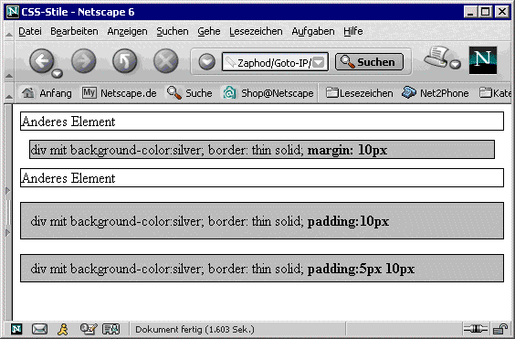
Die Eigenschaft overflow ist sehr interessant. Über diese Eigenschaft können Sie Elemente, die einen für das Element eigentlich zu großen Inhalt verwalten, automatisch mit Rollbalken ausstatten, was gleichzeitig verhindert, dass der Browser diese Elemente ungefragt vergrößert:
<div style="width:150px;height:80px;
background-color:white;
border:thin solid;overflow:auto">
Dieses div-Element speichert zu viel Text.
Das Element wird automatisch mit Rollbalken,
ausgestattet, weil die overflow-Eigenschaft
auf den Wert auto gesetzt wurde.
</div>
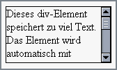
6.7 Stile für die Position und die Größe
Die Position und Größe eines HTML-Elements wird normalerweise vom Browser bestimmt. Die Position wird dabei streng nach der Reihenfolge der Tags im Quellcode und der Größe der vorhergehenden Elemente definiert. Einige Elemente wie div und die Header-Tags implizieren Absätze, so dass folgende Elemente immer unterhalb davon angelegt werden. Die Größe des Elements bestimmt der Browser nach dessen Inhalt. Position, Größe und das Positionierungsverhalten können Sie jedoch auch beeinflussen. Verwenden Sie dazu die folgenden Stile:
- position (CSS2): bestimmt, auf welche Art das Element positioniert wird. Sie können die folgenden Werte einsetzen: static, relative, absolute, fixed und inherit. static bedeutet, dass das Element fließend im Dokument angelegt wird, wie es dem HTML-Standard entspricht. Die in left und top eventuell angegebenen Werte werden nicht berücksichtigt. Bei einer relative-Positionierung wird das Element fließend im Text angelegt, wobei die in left und top angegebenen Werte als Offset zur normalen Position addiert werden. Eine absolute Positionierung bezieht sich auf den linken, oberen Eckpunkt des Parent-Elements. Die letzte Möglichkeit, inherit, sorgt dafür, dass das Element die position-Eigenschaft von seinem Parent-Element erbt.
- left, top, right, bottom (CSS2): Mit diesen CSS2-Eigenschaften können Sie die Position bestimmen, wenn die position-Eigenschaft eine Positionierung erlaubt.
- width, height: Mit diesen Eigenschaften können Sie die Breite und Höhe eines Elements bestimmen. Wenn Sie die Breite und Höhe eines Elements einstellen, müssen Sie beachten, dass die Browser das Element u. U. automatisch vergrößern. Für den Fall, dass ein im Element dargestellter Text zu groß ist für das Element, behält das Element beim Netscape 6 seine Größe und der Inhalt reicht über das Element hinaus, wenn es sich um ein Blockelement handelt, Inline-Elemente werden nach rechts vergrößert. Der Internet Explorer und der Netscape 4 vergrößern das Element nach unten, um den Inhalt darzustellen. Ist der Inhalt des Elements eine Grafik, wird die Grafik automatisch auf die angegebene Größe skaliert (allerdings nicht vom Netscape 4, benutzen Sie hier die width- und height-Attribute des img-Tag).
- min-width, min-height: Diese CSS2-Eigenschaften bestimmen die minimale Höhe bzw. Breite eines Elements. Der Browser darf die Elemente aber auch breiter bzw. höher ausgeben, wenn der Inhalt des Elements dies erfordert.
- max-width, max-height: Diese CSS2-Eigenschaften bestimmen die maximale Höhe bzw. Breite eines Elements. Der Browser darf die Elemente nicht breiter bzw. höher ausgeben, auch wenn der Inhalt des Elements dies erfordert.
- float: Mit dieser Eigenschaft können Sie erreichen, dass HTML-Elemente und Text fließend um ein Element herum angelegt werden (so wie Sie es von der Zeitung her kennen). float:left bewirkt z. B., dass das Element am linken Rand des umschließenden Elements positioniert wird (z. B. am Rand des body) und andere Elemente derselben Ebene rechts vom Element fließend positioniert werden. Abbildung 7.7 auf Seite 33 zeigt, was ich damit meine. Bei float: right wird das Element äquivalent auf der rechten Seite des umschließenden Elements positioniert und andere Elemente fließen auf der linken Position. Beachten Sie, dass der Netscape 4.7 float nicht korrekt unterstützt und das Element nicht nur am linken bzw. rechten Rand des umschließenden Elements, sondern auch am oberen darstellt.
- clear: Diese Eigenschaft bestimmt, ob ein Element fließende Elemente an seinen Seiten erlaubt. Mit dem Wert left legen Sie fest, dass links keine fließenden Elemente erlaubt sind, right verbietet fließende Elemente rechts und both auf beiden Seiten.
7 Positionieren
7.1 Relatives und absolutes Positionieren
Die folgenden Beispiele sollen die Positionierung von HTML-Elementen verdeutlichen. Im folgenden HTML-Quelltext,
<body>
<p>Das ist ein Absatz.</p>
Das ist Text vor dem span-Element.
<span style="border:thin solid">
Das ist ein span-Element.</span>
<b>Das ist fetter Text.</b>
<div style="border:thin solid">Das ist ein div-Element</div>
Das ist Text nach dem div-Element.
werden das span-Element (wie alle anderen auch) fließend hinter dem Absatz und vor dem b-Element angelegt, das div-Element wird ebenso fließend angelegt, erzeugt aber einen Zeilenumbruch vor und nach der Ausgabe (Abbildung 7.1).
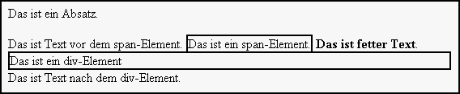
Mit einer relativen Positionierung können Sie diese Normalposition nun um einen X- und Y-Offset verschieben:
<p>Das ist ein Absatz.</p>
Das ist Text vor dem span-Element.
<span style="border:thin solid;
position:relative;top:80px;left:50px;">
Das ist ein span-Element.</span>
<b>Das ist fetter Text.</b>
<div style="border:thin solid;
position:relative;top:100px;">
Das ist ein div-Element</div>
Das ist Text nach dem div-Element.
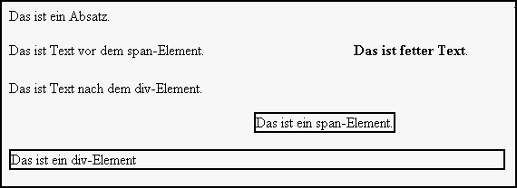
Das span-Element wurde um 50 Pixel nach rechts und um 80 Pixel nach unten verschoben, relativ zu seiner normalen Position. Das div-Element wurde relativ um 100 Pixel nach unten verschoben. Blockelemente wie das div-Element können auch nach rechts verschoben werden. Die Breite bleibt dann allerdings bestehen. Wenn Sie diese nicht in der width-Eigenschaft spezifizieren, ist das Element immer etwa so breit wie der Innenbereich des Browserfensters (abzüglich der inneren Ränder des Dokuments).
Wenn Sie ein Element absolut verschieben, beziehen sich die Angaben in left und top auf die linke, obere Ecke des Parent-Elements. Ist das Parent-Element das body-Tag, beziehen sich die Angaben auf die linke, obere Ecke des Dokuments:
<p>Das ist ein Absatz.</p>
Das ist Text vor dem span-Element.
<span style="border:thin solid;
position:absolute;top:80px;left:50px;">
Das ist ein span-Element.</span>
<b>Das ist fetter Text.</b>
<div style="border:thin solid;
position:absolute;top:100px;">
Das ist ein div-Element</div>
Das ist Text nach dem div-Element.
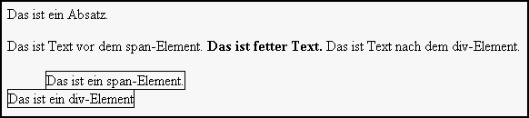
Da die Position des span- und des div-Elements nun vom linken, oberen Rand des body-Tag aus gerechnet wird, werden die Elemente anders positioniert als bei der relativen Positionierung. Ein Nebeneffekt der absoluten Positionierung ist, dass ein Blockelement wie das div-Element nicht mehr als Blockelement dargestellt wird. Ob das so im Standard definiert ist oder ein Fehlverhalten der Browser ist, ist mir unklar. Der Internet Explorer macht übrigens bei der absoluten Positionierung Probleme, wenn Sie entweder left oder top nicht angeben. In unserem Beispiel ist das div-Element nach rechts verschoben ().
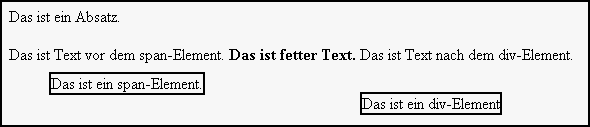
<div style="border:thin solid;
position:absolute;left:0;top:100px;">
Das ist ein div-Element</div>
Verschobene Elemente haben keinen Einfluss auf die Position anderer Elemente auf derselben Ebene. Der fett formatierte Text in Abbildung 7.2 wurde beispielsweise nicht verschoben, obwohl er ja eigentlich im HTML-Quelltext dem span-Element folgt. Die Position eines relativ verschobenen Elements ändert sich aber, wenn sein Parent-Element verschoben wird. Ein span-Tag, der Child eines anderen span-Tags ist und der innerhalb dieses Parent relativ positioniert ist, wird mit dem Parent verschoben, wenn dieser ebenfalls positioniert wird:
<span style="border:thin solid; background-color:silver;
position:absolute;left:20;top:20;
width:400px;height:80px">
<span style="border:thin solid;background-color:white;
position:relative; left:10;top:10">
Das ist das innere span-Element.
</span>
</span>
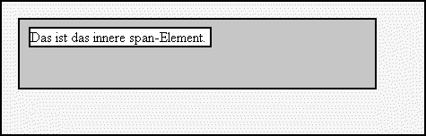
Dieses Feature nutzen HTML-Designer häufig für die Gestaltung von Menüs, bei denen die Menüeinträge relativ innerhalb eines absolut positionierten span-Elements platziert werden.
7.2 Den Fluss der Elemente steuern
Wenn Sie HTML-Elemente nicht positionieren, werden andere HTML-Elemente, die in derselben Zeile ausgegeben werden, per Voreinstellung an der Grundlinie des größeren HTML-Elements ausgerichtet und in die nächste Zeile unter dem größeren Element umbrochen:
<img src="hand.gif">
Wenn Sie HTML-Elemente nicht positionieren, werden andere HTML-Elemente,
die in derselben Zeile ausgegeben werden, per Voreinstellung an der Grundlinie
des größeren HTML-Elements ausgerichtet.
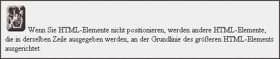
Sie können mit der float-Eigenschaft nun erreichen, dass ein Element entweder links oder rechts an seinem Parent ausgerichtet wird, dass Text, der in derselben Zeile steht, nun an der oberen Linie ausgerichtet wird und dass dieser Text dann rechts oder links am Element vorbeifließt:
<img src="hand.gif" style="float:left;">
Dieser Text wird deswegen fließend auf der rechten Seite des Bildes ausgegeben,
weil dieses den Stil float:left besitzt.<br>
<div style="border:thin solid; background-color:silver">
Der Inhalt eines div-Elements wird (natürlich) ebenfalls fließend rechts
ausgegeben und fließt u. U. auch unter dem Bild weiter.</div>
Weiterer Text fließt dann einfach unter das Bild.
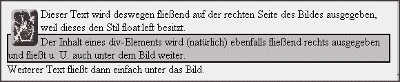
Die float-Eigenschaft verträgt sich nicht direkt mit einer Positionierung. Wenn Sie beispielsweise relativ positionieren, überlagert das Bild den Text:
<img src="hand.gif" style="float:left;position:relative;left:20">
Dieser Text wird wahrscheinlich (je nach Browser) vom Bild teilweise überlagert,
weil float und position nicht ohne weiteres gleichzeitig eingesetzt werden können.
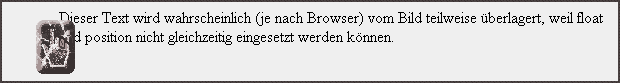
Wenn Sie aber den Text auch entsprechend verschieben, ist alles wieder in Ordnung:
<img src="hand.gif" style="float:left;position:relative;left:20">
<span style="position:relative;left:20">
Wird der Text aber genauso verschoben, ist wieder alles in Ordnung.
</span>
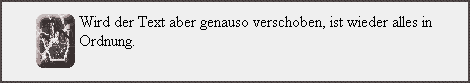
8 Klassifizierungs-Eigenschaften
Einige CSS-Eigenschaften teilen Elemente in Kategorien ein, anstatt die Formatierung der Ausgabe zu beeinflussen. Dazu gehört beispielsweise die Eigenschaft display, über die Sie steuern können, ob ein Element blockweise, als Inline-Element oder als Listeneintrag dargestellt wird.
- display: definiert, ob ein Element normal dargestellt wird (none, Voreinstellung), als Blockelement (block), als Inline-Element (inline) , als Eintrag einer Liste (list-item), als
- list-style-type: bestimmt den Typ eines Aufzählungs- oder Auflistungszeichens für den Eintrag einer Liste (in einem ul- oder ol-Element). Sie können die Werte disc (gefüllter Kreis), circle (ungefüllter Kreis), square (Rechteck), decimal (Zahlen), lower-roman (kleine römische Ziffern), upper-roman (große römische Ziffern), lower-alpha (Kleinbuchstaben), upper-alpha (Großbuchstaben) und none (kein Zeichen) verwenden.
- list-style-image: Über diese Eigenschaft können Sie eine Bilddatei als Aufzählungszeichen für Listen angeben. Verwenden Sie dazu die url-Funktion.
- list-style-position: Über diese Eigenschaft können Sie festlegen, wie das Aufzählungs- oder Auflistungszeichen eingerückt wird. Der Wert outside (Voreinstellung) bewirkt, dass das Zeichen links etwas vom Text eingerückt ist. Wenn Sie inside eintragen, wird das Zeichen nicht nach links eingerückt. inside soll wohl eine kompaktere Darstellung ermöglichen. Leider wird die gesamte Liste trotzdem nach rechts eingerückt, was dann wieder genauso viel Platz beansprucht.
- list-style: Über diese Eigenschaft können Sie die Werte der Eigenschaften list-style-type, list-style-image und list-style-position gemeinsam definieren.
Über die display-Eigenschaft können Sie ein Element, das normalerweise inline dargestellt wird, auch als Block darstellen lassen. Für in einem Block dargestellte Elemente können Sie die Ränder nach oben und unten angeben. So können Sie beispielsweise für ein Dokument ein Inhaltsverzeichnis aus a-Tags zusammenstellen. Das Problem bei normalen a-Tags ist, dass diese nicht die Definition eines vertikalen Abstandes zum nächsten Element zulassen, weil es sich per Voreinstellung um ein Inline-Element handelt. Die Lösung ist die Umdefinition der benötigten Elemente zum Blockelement:
<style type="text/css">
<!--
a.h1
{
display: block;
color: black;
text-decoration:none;
font-weight:normal;
font-size:medium;
font-family:Arial;
margin-bottom: 10px;
margin-top: 10px;
}
a.h2
{
display: block;
position:relative;
left:30px;
color: black;
text-decoration:none;
font-weight:normal ;
margin-bottom: 5px;
margin-top: 5px;
font-size:small;
font-family:Arial;
}
a.h3
{
display: block;
position: relative;
left: 60px;
color: black;
font-size:smaller;
text-decoration:none;
font-weight:normal;
font-family:Arial;
}
-->
</style>
Wenn Sie nun ein Inhaltsverzeichnis mit diesen Tag-Klassen erzeugen,
<h1>Inhaltsverzeichnis</h1>
<a class="h1" href="#Grundlagen">Grundlagen</a>
<a class="h2" href="#WhatIs">
Was ist Internetprogammierung?</a>
<a class="h3" href="#Client">
Clientseitige Progammierung</a>
<a class="h3" href="#Server">
Serverseitige Progammierung</a>
<a class="h2" href="#Protokolle">Internet-Protokolle</a>
<a class="h3" href="#IP">IP</a>
<a class="h3" href="#IP">TCP</a>
<a class="h3" href="#IP">UDP</a>
<a class="h3" href="#IP">HTTP</a>
<a class="h2" href="#IIS">Der IIS</a>
<a class="h1" href="#HTML">HTML</a>
<a class="h2" href="#Tags">Tags</a>
<a class="h2" href="#Textformatierung">
Textformatierung</a>
<a class="h2" href="#Tabellen">Tabellen</a>
sieht das Ergebnis aus, wie gewünscht (Abbildung 8.1).
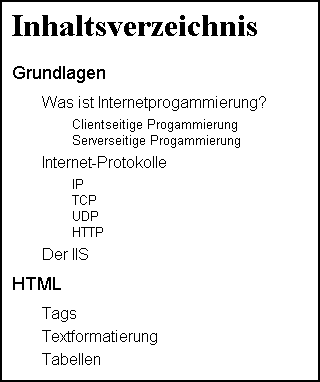
9 Medien
9.1 Unterschiedliche Formatierung für verschiedene Ausgabemedien
In CSS2 können Sie zwischen verschiedenen Ausgabemedien unterscheiden. So können Sie beispielsweise ein Dokument für die Bildschirmausgabe anders formatieren als für den Druck:
<style type="text/css">
<!--
/* Stilvorlage für den Bildschirm und
für Handheld-Computer */
@media screen, handheld
{
body {background-color:#F0F0F0; margin:20px;
font-family:arial; font-size:11pt}
div.special {background-color:silver; color:black;
border:2px solid black; padding:0.2cm}
div.onlyscreen {background-color:blue;
border:1px solid black; padding:3px; color:white;
visibility:show}
}
/* Stilvorlage für den Ausdruck */
@media print
{
body {background-color:white; margin:2cm;
font-family:times; font-size:12pt}
div.special {background-color:silver; color:black;
border:0.1cm solid black; padding:0.2cm}
div.onlyscreen {visibility:hidden}
}
-->
</style>
CSS2 kennt dazu verschiedene Medientypen, die innerhalb einer Stilvorlage über die At-Regel @media angegeben werden.
| Medientyp | Bedeutung |
|---|---|
| all | alle Medien |
| aural | Medien zur Sprachausgabe |
| braille | Ausgabegeräte zur Erzeugung einer Zeile Blindenschrift |
| embossed | Blindenschrift-Drucker |
| handheld | Handheld-Computer |
| Drucker | |
| projection | Projektoren (Beamer) |
| screen | Bildschirm |
| tty | Nicht grafische Ausgabegeräte mit fester Zeichenbreite wie beispielsweise der alte DOS-Bildschirm |
| tv | TV-Geräte |
Sie können Stilvorlagen für eine oder mehrere Medientypen erzeugen. Das Beispiel oben erzeugt je eine Stilvorlage für den Ausdruck und für die Ausgabe auf dem Bildschirm bzw. einem Handheld-Computer. Dabei werden verschiedene Eigenschaften, wie die Schriftart, die Dokument-Ränder, die Rahmenstärken und die inneren Ränder der div-Elemente, verschieden definiert. Ein besonders nettes Feature ist, dass Sie über die Verwendung mediengebundener Stilvorlagen auch Elemente bei der Ausgabe auf bestimmten Medien verstecken können, wie es im Beispiel für das div-Element der Klasse onlyscreen der Fall ist. Dieses Element wird im Druck nicht ausgegeben.
9.2 Import für bestimmte Medien
Wenn Sie Ihre medienbezogenen Stilvorlagen in css-Dateien verwalten, können Sie diese recht einfach über das link-Tag in ein Dokument einbinden. Dazu geben Sie im media-Attribut die Medien an, für die die gelinkte Stilvorlage gelten soll:
<head>
...
<link rel="stylesheet" href="screen.css" media="screen">
<link rel="stylesheet" href="printer.css" media="print">
...
</head>
Alternativ können Sie css-Dateien auch über die At-Regel @import medienbezogen importieren. Diese Variante funktioniert allerdings nicht mit dem Internet Explorer (6). Geben Sie die Medien dazu am Ende der @import-Regel an:
<head>
...
<style type="text/css">
<!--/* Stilvorlagen importieren */
@import "screen.css" screen, handheld;
@import "printer.css" print;
-->
</style>
...
</head>
10 Praxistipps
10.1 Layer für den Netscape 4, den Netscape 6 und den Internet Explorer
Layer, die im Netscape 6 und im Internet Explorer funktionieren, sind kein Problem, weil beide Browser die CSS-Attribute für die Positionierung und Größeneinstellung korrekt interpretieren. Kommt dagegen der Netcape 4 ins Spiel, wird das Ganze etwas komplizierter.
Wie ich bereits im Artikel HTML beschrieben habe, hat der Netscape 4 so einige Probleme mit dem div- und dem span-Tag. Wenn Sie Layer für die Gestaltung Ihrer Dokumente einsetzen und diese frei positionieren wollen, müssen Sie zu einem kleinen Trick greifen. Der Netscape 4 wertet immerhin Positionierungsangaben von div- und span-Elementen korrekt aus, wenn diese absolut angegeben werden. Mit relativen Angaben hat er allerdings Probleme, die Attribute width, height, padding und andere wertet er erst gar nicht aus:
<span name="ie6ns6Layer" id="ie6ns6Layer"
style="position:absolute;
left:60;top:50;width:200;height:100;
background-color:silver;padding:5px">
Das ist ein absolut positioniertes span-Element.
</span>
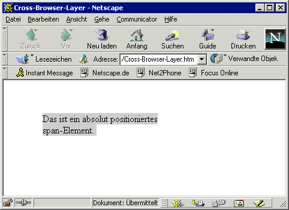
Um nun wenigstens die Breite und Höhe einstellen zu können, platzieren Sie ein layer-Element in dem span- oder div-Element. Achten Sie darauf, dass Sie eine andere Id für diesen Layer verwenden als für das span- bzw. div-Element, ansonsten stellt der Netscape 4 den Layer schon einmal inkorrekt dar:
<span name="iens6Layer" id="iens6Layer"
style="position:absolute;
left:60;top:50;width:200;height:100;
background-color:silver;padding:5px">
<layer id="ns4Layer" width="200"
height="100" bgcolor="silver">
Das ist ein absolut positioniertes span-Element
mit einem Netscape-Layer.
</layer>
</span>
Im layer-Tag müssen Sie neben der Breite und der Höhe die Hintergrundfarbe noch einmal angeben. Das Ergebnis ist einigermaßen zufrieden stellend, wie Abbildung 10.2 zeigt, und wird auch im Netscape 6 und im Internet Explorer korrekt dargestellt (Abbildung 10.3).
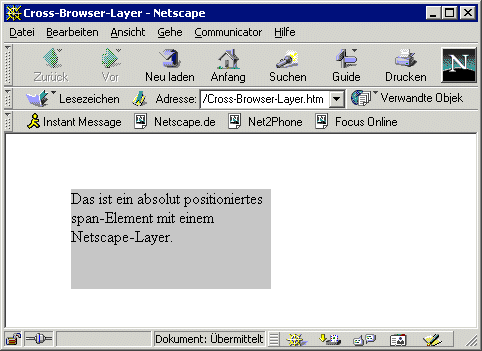
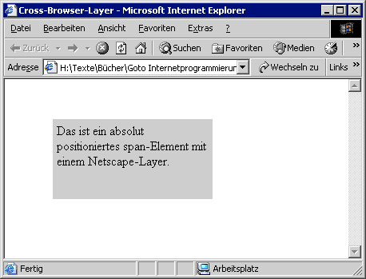
Leider bietet der Netscape-Layer keine Möglichkeit, den inneren Rand einzustellen, was bei CSS ja über das padding-Attribut möglich ist. Da das left- und das top-Attribut des layer-Tag nicht ausgewertet werden, wenn das layer-Element Child eines span- oder div-Tags ist (was ich ausprobiert habe), müssen Sie wieder zu einem kleinen Trick greifen, wenn Sie einen inneren Rand einstellen wollen: Platzieren Sie den Netscape-Layer einfach in einem weiteren Layer und rücken Sie den inneren Layer um die Anzahl Pixel ein, die den inneren Rand darstellen sollen:
<span name="iens6Layer" id="iens6Layer"
style="position:absolute;
left:60;top:50;width:200;height:100;
background-color:silver;padding:5px">
<layer width="200" height="100"
bgcolor="silver">
<layer id="ns4Layer" left="5" top="5"
width="190" height="90" bgcolor="silver">
Das ist ein absolut positioniertes span-Element
mit einem Netscape-Layer.
</layer>
</layer>
</span>
Nun ist das Ergebnis im Netscape 4, im Netscape 6 und im Internet Explorer 6 in etwa identisch (wenn der Netscape 6 (!) auch eine andere Vorstellung davon hat, wie groß 1 Pixel denn nun wirklich ist).
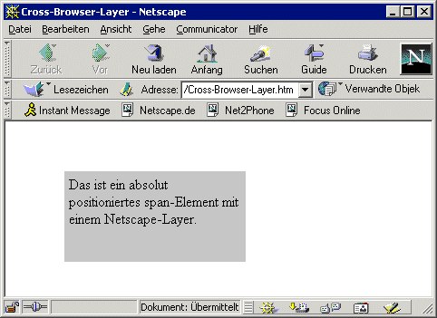
Index
© Jürgen Bayer 2002